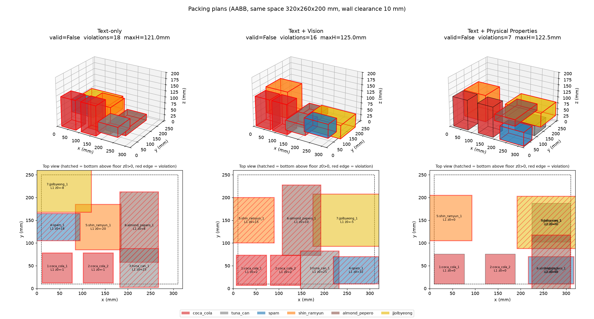

주문 상품 7개를 봉투에 어떻게 담을지 LLM(OpenAI API)에게 계획하게 했습니다. 상품 정보를 어떻게 주느냐에 따라 계획 품질이 달라지는지 비교한 기록입니다.
로봇은 Doosan M0609 팔과 RG2 그리퍼로 상품을 비닐봉투에 담습니다. 봉투는 고정 용기에 끼워 모양을 유지하고, 안쪽 공간은 직육면체로 단순화했습니다. 이번 단계는 로봇 없이 계획만 비교합니다.
| 상품 | 수량 | DB 치수 W×D×H (mm) | 무게 | 위에 쌓기 |
|---|---|---|---|---|
| 코카콜라 355mL 캔 | 2 | 66×66×122 | 370 g | 가능 · 200 g |
| 참치캔 | 1 | 85×85×40 | 165 g | 가능 · 300 g |
| 스팸 200g | 1 | 100×60×55 | 230 g | 가능 · 300 g |
| 신라면 컵 | 1 | 100×100×110 | 80 g | 금지 |
| 아몬드 빼빼로 | 1 | 85×25×155 | 48 g | 금지 |
| 쫄병스낵 | 1 | 150×115×55 | 87 g | 금지 |
DB 수치는 개발용 근사값이며 실측값이 아닙니다. "가능 · 200 g"은 그 상품 위에 올려도 되는 최대 무게입니다.
basket.jpg)모델, 주문, 공간, 프롬프트, 출력 형식(JSON 스키마), 생성 설정(temperature 0)은 세 조건 모두 같습니다. 요청은 각각 독립적으로 보내 이전 결과를 전달하지 않았습니다. Experiment 1·2 요청에 DB 값이 섞이지 않았는지 코드로 확인했습니다.
| # | 규칙 | 쉽게 말하면 |
|---|---|---|
| 1 | 누락 | 주문한 7개가 모두 들어갔나 |
| 2 | 중복 | 같은 상품을 두 번 넣지 않았나 |
| 3 | 경계 | 벽 여유 10 mm 안쪽, 바닥 위, 높이 200 mm 이하인가 |
| 4 | 충돌 | 상품끼리 겹치지 않나 (상자 모양으로 근사) |
| 5 | 자세 | 캔을 눕히는 등 허용되지 않는 자세가 없나 |
| 6 | 적재 금지 | 신라면·빼빼로·쫄병스낵 위에 무언가를 올리지 않았나 |
| 7 | 하중 | 아래 상품이 견딜 수 있는 무게를 넘지 않나 |
| 8 | 지지면 | 바닥이나 아래 상품에 실제로 닿아 있나, 바닥 면적의 30% 이상 받쳐지나 |
| 9 | 무게중심 | 상품 중심이 받쳐 주는 영역 안에 있나 (근사) |
| 10 | 층수 | 3층 이상 쌓지 않았나 |
| 11 | 순서 | 아래 상품을 위 상품보다 먼저 담았나 |
구현하지 않은 것: 실제 무게중심, 원통의 정확한 모양(상자로 근사), 마찰과 변형, 그리퍼가 들어갈 공간, 봉투 입구 통과 경로. 따라서 "통과"가 실제 안전을 보장하지는 않습니다.
| 지표 (본 실험) | Text-only | Text + Vision | Text + 물리 특성 |
|---|---|---|---|
| 계획 생성 | 성공 | 성공 | 성공 |
| 검증 통과 | 실패 | 실패 | 실패 |
| 총 위반 (예비 실행) | 18 (18) | 16 (16) | 7 (4) |
| 바닥이나 아래 상품에 닿지 않은 상품 | 7 / 7 | 7 / 7 | 2 / 7 |
| 2층 적재 시도 | 없음 | 없음 | 2개 시도 (실패) |
| 최대 적재 높이 | 121 mm | 125 mm | 122.5 mm |
| 응답 시간 | 4.7 s | 6.5 s | 4.0 s |
| 입력 / 출력 토큰 | 1,502 / 859 | 2,340 / 797 | 2,242 / 708 |
| 추정 비용 | $0.0123 | $0.0138 | $0.0127 |
비용은 gpt-4o 공개 단가(입력 $2.50, 출력 $10 / 100만 토큰)로 계산한 추정치입니다. 사진을 넣으면 입력 토큰이 약 840개, DB를 넣으면 약 740개 늘었습니다. 세 조건 모두 같은 상품을 같은 용기에 담으므로 "상품 부피 ÷ 용기 부피"는 동일하여 비교 지표로 쓰지 않았습니다.

LLM이 상품 크기를 추측해서 z(높이 중심)를 정했는데 추측이 틀렸습니다. 그래서 상품이 공중에 뜨거나 바닥 아래로 파고들었습니다.
| 상품 | LLM이 추측한 높이 | DB 높이 | 결과 |
|---|---|---|---|
| 참치캔 | 90 mm | 40 mm | 25 mm 떠 있음 |
| 신라면 컵 | 70 mm | 110 mm | 20 mm 파고듦 |
| 스팸 | 90 mm | 55 mm | 17.5 mm 떠 있음 |
| 코카콜라 | 120 mm | 122 mm | 1 mm 파고듦 |
Text-only 기준입니다. 이 실행에서는 코카콜라를 "500ml 페트병"으로 가정하기도 했습니다. 사진을 넣었을 때는 콜라 크기(65×65×125)만 거의 맞혔고, 쫄병스낵은 빼빼로와 같은 크기로 적는 등 오히려 틀린 경우도 있었습니다.
치수를 정확히 받아서 바닥 상품 5개는 높이가 모두 맞았습니다. 남은 실수는 계산 실수였습니다.
LLM이 스스로 가정한 치수를 정답으로 놓고 다시 검사해도 세 조건 모두 4~11건이 위반됐습니다. 정보가 정확해도 gpt-4o는 mm 단위 좌표 계산을 안정적으로 하지 못한다는 뜻입니다. 같은 입력, temperature 0인데도 예비 실행(4건)과 본 실험(7건)의 결과가 달랐습니다.
도움 됨 위반이 절반 이하로 줄었고, 크기를 잘못 알아서 생기는 실패가 사라졌습니다. 2층 적재도 DB 정보를 근거로 시도했습니다.
그것만으로는 부족 검증을 통과한 계획은 0개입니다. 사진(Vision)은 효과가 작고 토큰만 가장 많이 썼습니다.
.env가 .gitignore에 등록된 것 확인결과 파일에 Key가 없는 것도 검사함완료.venv: openai, python-dotenv, matplotlib)완료--repeats 10)아직 git 커밋은 하지 않았습니다. 상품 DB 값, 주문 웹, 추천, 재고, ROS2 코드는 수정하지 않았습니다.